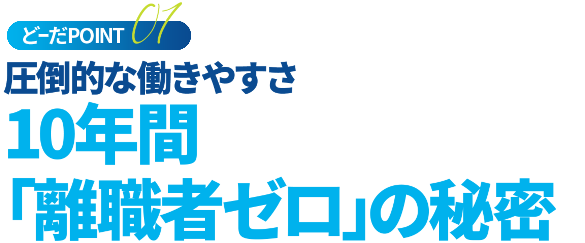
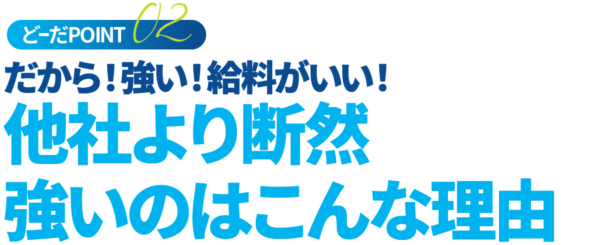
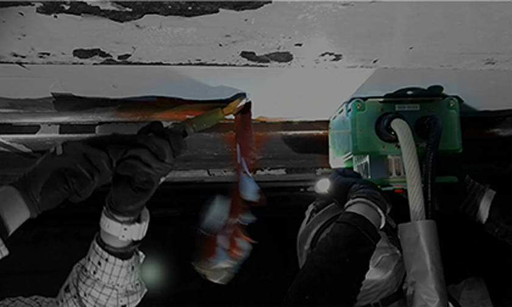
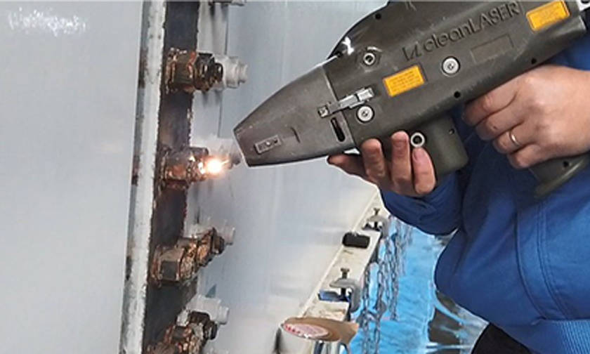
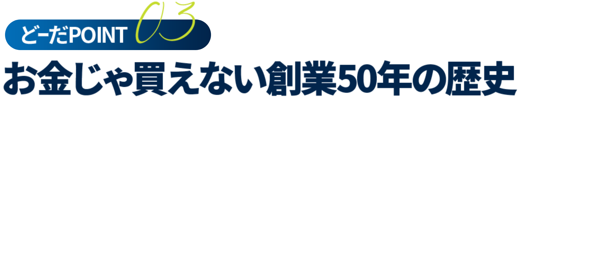

若手への教育が手厚い！
それだけ働きやすい環境づくりをみんなが意識してるということじゃないですかね？ 僕も実際上司の方に働きやすい環境を作ってもらっているので働きやすいなと思います。
この業界って結構厳しいイメージありますし実際、同業他社さんでは結構理不尽なこと言われたり上下関係がキツイって聞くんですが、うちではあまり感じないですね。もちろん上下関係は大事だと思いますが、僕らから上への壁はないなって感じますし話しやすいなって思います。新人の頃ってわからないこと多いじゃないですか、そんな時に「なんでこんなこともできないんだ？」って他社さんでは言われるらしいんですが、この会社ではそんなこと一度も言われたことはまったくないですね。先輩上司みんなが１から丁寧に教えてくれるんです。若手が育てば会社がさらに大きくなっていく、みんなで会社を大きくしていこうと思っているので全員が若手を育てようとしてくれているのが本当にありがたいなと思っています。
僕も新人が入ってきたら丁寧に教えて僕を超えていくぐらいになってもらいたいと思います。でも、僕も成長するんで絶対抜かれませんけどね。
国籍フィリピン
教え方がうまいからレベルが上がる
モラレスセディパルマ31歳です。2017年に入社しました。国籍はフィリピンです。僕がこの会社のいいなと思っているところは、日本人の先輩社員の教え方がとても丁寧でわかりやすいというところです。最初は仕事のこと難しくてよくわからなかったけどみんな親切にしてくれて何度も丁寧に教えてくれたのですぐに仕事ができるようになり仕事も楽しくなりました。他の会社のフィリピン人と話をすることがありますが、ケイズプロスはレベルが違うなと思います。同じ7年働いている人とのレベルの差を感じます。
ケイズプロスで働いているとどんどんレベルが高くなると思います。他の会社のフィリピン人はほとんど図面を見ることができないと思います。でもケイズプロスのフィリピン人は僕を含め見ることができる人がいます。最初は僕も読めなかったけど、先輩が「この図面見てわかりますか？」と聞いてくれて僕がわからないと言うと、「じゃあ見方教えてあげるね、この図面はこうやって見るんだよ」とわかりやすく教えてくれます。だからフィリピン人のレベルもだんだんと上がるんです。ケイズプロスの先輩はとても優しい、教え方が上手です。
それからめっちゃいいお給料もらってます（笑）福井の中にはなかなかないと思います。先輩たちも他とは全然違います（笑）ユニフォームも他の会社よりたくさんもらえます（ユニフォーム上下年2回、夏は空調服、冬は防寒着を支給）休みの時は自分で車を運転して海やキャンピングに行ってます。休みが多いのがとても嬉しいです。
ケイズプロスでは取れる資格は積極的に取りなさいと言ってくれます。資格をとるためのお金も会社が出してくれるし、資格が取れたら給料も上がるのでとてもありがたいです。そして資格のための勉強も先輩みんなが教えてくれるので勉強は難しいけど頑張れます。

建築・土工・塗装業界を
牽引する総合力
時代やライフスタイルの変化により、都市・地域のデザインや機能も変化しています。その中で私たちは、住宅や公共施設、橋梁など、生活や産業の基盤であるハード面と深く関わっています。
私たちは、人々の安全で快適な暮らしの根幹を担う建築・土木のプロ集団として、確かな技術と時代のニーズに呼応した発想・提案力を持って、よりよい地域・まちづくりに貢献します。
業界最新技術が光る
IH塗膜剥離
IH式塗膜剥離工法は、社会インフラの鋼製橋梁（高架橋・歩道橋・跨線橋等）や水門、タンクなどの塗膜を安全で簡易に剥がすことが出来る工法です。
本工法は、塗膜に含まれている有害物質である、鉛、六価クロム、PCBを安全に取り除くことが出来ます。
高速道路事業者様や鉄道事業者様からも大変好評を得ており、塗膜除去時の産業廃棄物量が軽減できることも併せて評価されています。
レーザークリーニング
最新のクリーンレーザーシステムを使用するレーザーブラスト（ケレン）工法は、高出力のレーザー光線が旧塗膜・鉄サビ部分を瞬時に除去し、微粒子を吸引するため、粉じんの飛散や産業廃棄物の発生・ブラスト作業中の騒音などが抑えられ、現場作業員の負担を大幅に軽減するメリットが期待出来ます。
作業現場の環境保全、作業効率改善による時間短縮により
お客様への信頼と同時に社員の作業負荷軽減にもつながっています。

鋼構造事業
クリーンレーザー工法や金属溶射工法を主に、最新の技術で鋼構造の橋梁補修工事に対応しています。
用途に合わせて安心・安全で確実な施工を行っています。
とび・土工事業
足場の組立・解体、現場に最初に入り工事の安全設備をつくります。
鉄骨の建て方などの作業や、建設資材等の重量物の運搬配置など様々な技能が要求され仕事は広範囲におよびます。
塗装事業
ビルや住宅等の塗装から橋梁塗装まで。
最後の仕上げ、保護と長寿命化を担う大切な作業です。塗装によって古い構造物が蘇ります。
会社概要
| 会社名 | ケイズプロス株式会社 |
|---|---|
| 所在地 | 本社：福井県福井市勝見3丁目17番地1号 坂井支店：福井県坂井市坂井町宮領50号19番地 |
| 代表者 | 代表取締役 加藤 幸司 |
| 資本金 | 2000万円（2021年10月現在） |
| 電話番号 | 本社：0776-21-0305 |
| FAX番号 | 本社：0776-21-0307 |
| 事業内容 | 鋼構造物工事業、塗装工事業、とび・土工工事業、土木工事業、解体工事業 |
| 建設業許可 | 福井県知事許可（特－3）第4214号 |